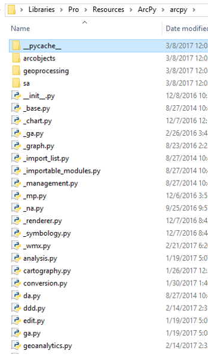
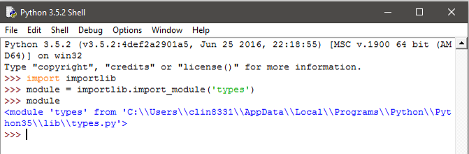

Deploying Geoprocessing Tools As Python Modules
Clinton Dow
Python Modules
- A module is a Python file ending in .py
- Groups related functions, classes and metadata
- Python Naming Convention (PEP8)
- lower_case_name_with_underscores
- A python package is composed of several modules
- A python package is a folder containing init.py
- Groups modules with related or complimentary concepts

Import Statement
- Pulls the functions in an imported module into the globals() namespace
- These become accessible ‘globally’ within that Python process
- Alias given at import time only accessible within the calling module
- Ie: ‘import arcpy’
- Can type arcpy.member_name only within the importing module
- If imported in a second module, there is no load time
- Module Objects
- Reference objects to the imported module’s collection of function bytecode
- Define what is visible to consumers via all = [] list of strings
- Used by most ‘intellisense’ style auto-complete
- Currently arcpy.da does NOT have an all therefore it does not autocomplete
importlib
- Introduced in Python 3.1
- Deprecates the ‘imp’ module
- Importlib.import_module(‘module_name’) will return a module object
- Explore modules by assigning the module object and looking at it’s dir()
- dir() lists all members in a module (including _private members)
- Functions/Classes/Variables with a leading _
- Not imported with ‘import *’ – unless added explicitly to all

Importing Best Practices
- Break functionality into small modules, import the finest grain of functionality
- Control loading of multiple modules via init.py in a Package
- Do not use ‘from library import *’ in modules designed to be consumed
- May cause namespace collisions
- Two members from different modules with the same name
- Avoid by importing explicitly
- ‘from library import member_name’
- Correct namespace collisions using as keyword
- ‘from library import member_name as unique_member_name’
Importing Best Practices
- Use importlib to access module objects
- Useful for ‘lazy loading’ of specific modules
- Also for conditional loading of specific modules
- Liberal use of _private variable names
- Hides most unwanted access to members
- Impossible to completely hide a member in Python
- Concise import statements
- Be mindful of namespace collisions both down and upstream

Code Reuse
- Modular code can be consumed in many places
- Write and test code in one place
- Avoid duplicating functions across tools
- Regularly refactor code to facilitate reuse
- View code as layers of functionality
- Data Model
- Functional Model
- View Model
- View
- Decreases time, money and effort spent in the future
- Ease of use
- ‘Self Documenting’
- Don’t reinvent the wheel
Testability
- Testing smaller increments of functionality in modules
- Focused testing
- Limited exposure to side-effects from other code
- Easy-to-follow debugging experience
- ‘Unit Tests’
- The smallest units of code within the module
- Should only have one job with defined edges
- ‘edge cases’ aka functional boundaries
- ‘Integration Tests’
- Interoperation between each function in multiple modules
- Harder to identify bugs
- More involved debugging process
Interchangeability
- Smaller units of code are easier to replace
- Improved method
- Updating variable names
- Also easier to understand
- Reading ‘War and Peace’ vs. Reading several small books
- Quickly prototype changes
- Create a test version with a module replaced
- Similar to building something with Lego vs. Concrete
Multiple ‘Views’
- Functionality like arcpy.GetParameter() in separate file from logic
- Consume modularized ArcPy code:
- .tbx
- .pyt
- Python Window
- Command Line
- Only write the tool one time
- Toolboxes provide different validation functionality
- .tbx through the Geoprocessing pane in application
- .pyt through python code in the toolbox file